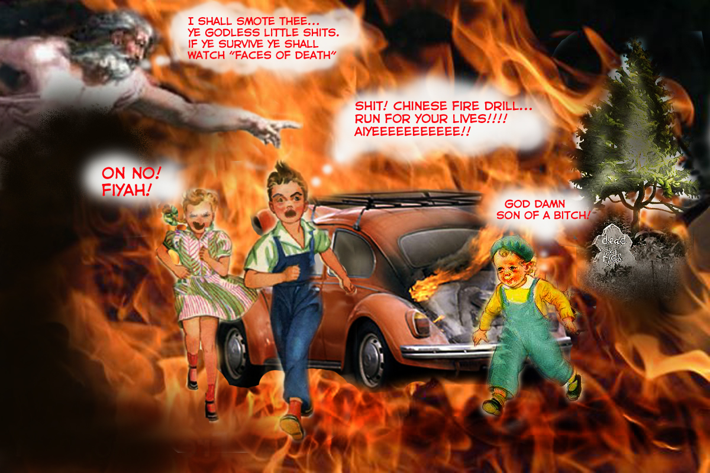

Economic or Cruel? Pet Food Alternatives Under Fire

CLEVELAND, OH- The effects of a sliding national economy are being felt around the world, with many middle and lower-class, working families finding new ways to fend for themselves. As prices rise from the pump to the grocery store, an unconventional and controversial method for stretching dollars is gaining popularity in low-income areas.
People are finding that it is more economically feasible to feed their animals live prey as opposed to buying canned or bagged food from the grocery store. In fact, the recent pet food scandals have added fuel to this practice, causing many working-class families to turn to animal shelters and rescues for inexpensive alternatives.

Winston, a 7 year old Russian Blue, prepares for his evening meal of two kittens from LIVE FEED.
“It is unacceptable to turn our beloved canine and feline companions into cannibals” says Lucy Metzer, PETA spokeswoman. “This practice is nothing short of abuse.” Douglass Plower, an advocate for LIVE FEED, a local kitten and puppy farm, disagrees. “We are giving folks an economical and highly nutritional method for caring for their pets in these trying times. Most animals, in fact, take to eating their own kind with amazing ease” Plower urges the public to look at the facts. “A can of Friskies can cost upwards of forty-nine cents. Yet, a trip to the right dumpster during kitten season is free, and can provide enough food for days for the average cat or dog.”
Government officials are looking into the practice, but so far, no rulings as to its legality have be made. “Give a cat some cat food, it eats for a day” recites Plower, “Teach a cat cannibalism, it eats for life.”
By: Electricspatula
EMT Weird World News Divison
Related posts

She Looked under the Covers... And It Was Remarkable
“The Oracle” where a select group is asked to answer unknown questions and to ask unanswerable questions. These are submitted…

Chinese Fire Drills Can't Even Kill A Bitch
(The following excerpt is taken from Ben Franklin's personal diary) "Today Lodi popped into my head. Summer 1979 Lodi, running…
Galvatron Loading up on Fast Food
Here is another dump of ai generated images I had laying around that made me laugh. I have a more…